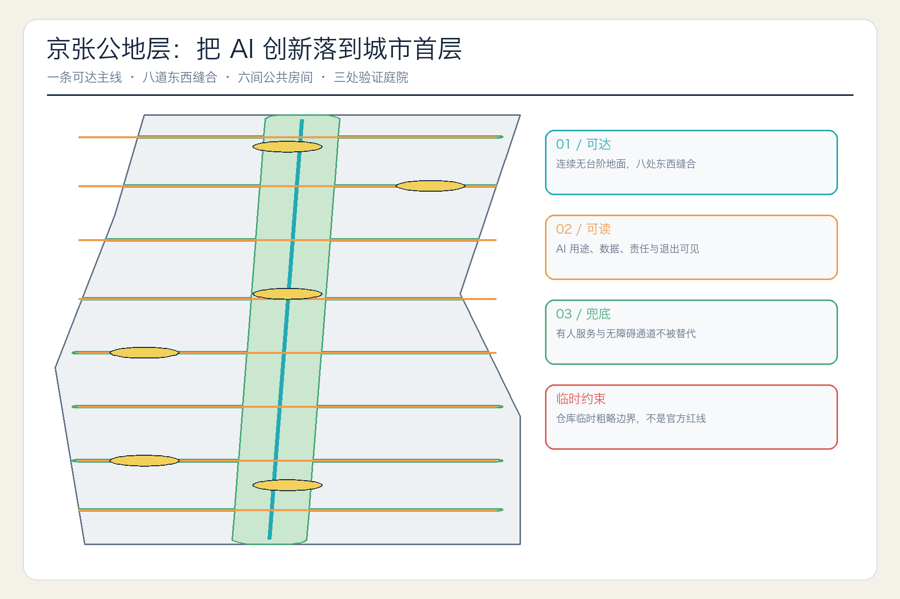
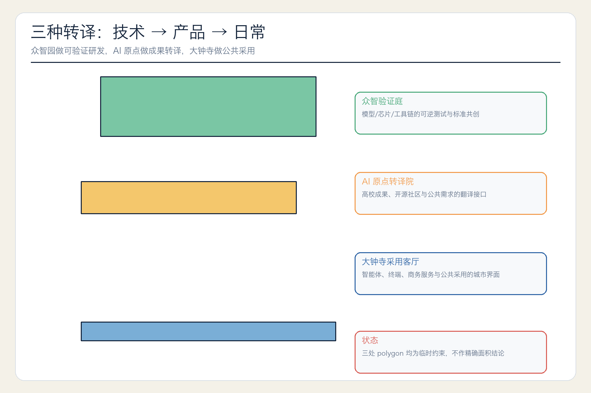
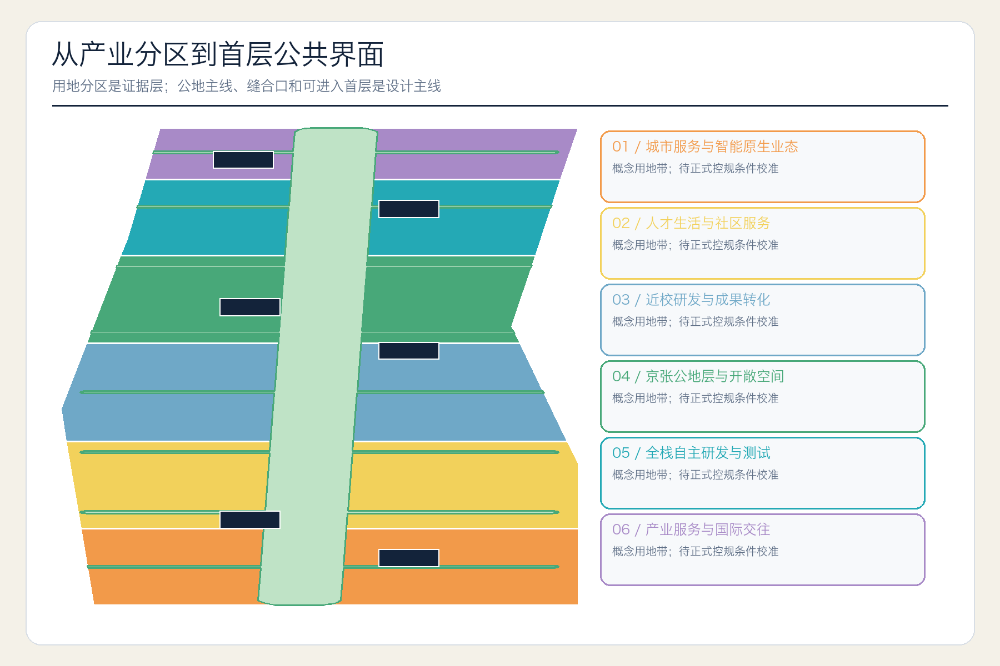
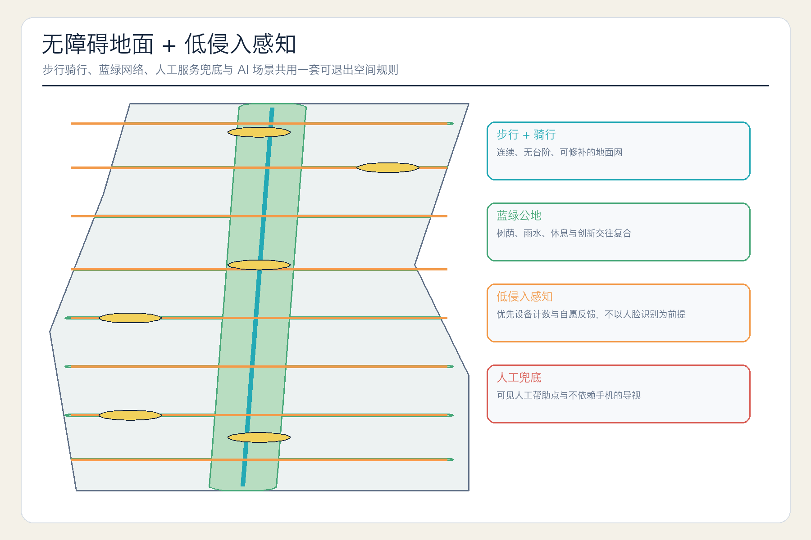
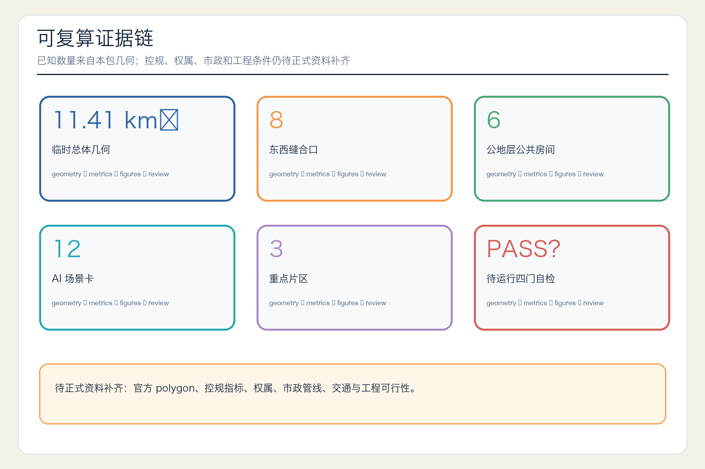

总览地图与三层范围

43.6 平方公里统筹研究范围负责战略，11.4 平方公里临时总体几何承载设计，三处临时重点区检验详细设计。
重点区域：三处转译庭院

用地分区与建筑首层

交通慢行与蓝绿公共空间

AI 场景与更新项目
12 张场景卡，其中 4 项为产业测试验证场景。
6 间公共房间与 8 道缝合口构成更新启动包。
核心指标
11.41 km²
site_area_sqm21.3%
green_ratio2.1%
public_space_ratio8
east_west_seam_count6
public_ground_room_count12
scenario_card_count
任务覆盖
1.3 / 1.4 / 1.5
agent.1–agent.6
5 mandatory standards
17 design-depth items
自检状态
待最终运行贡献者四门自检。
来源与假设
官方公告与已清权 Agent 任务书支撑任务判断；仓库 provisional polygon 仅支撑生成。官方边界、控规、权属、市政、文保和工程证据待补。